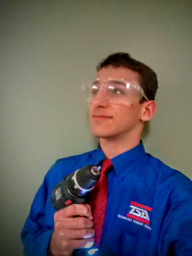
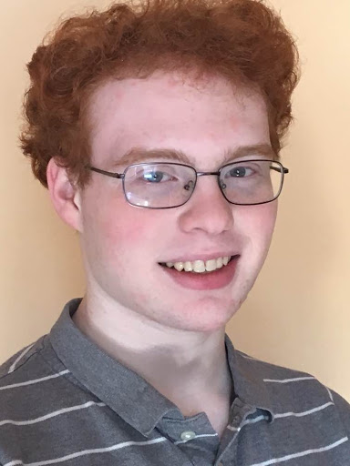

Ithaca High School is led by a team of six officers who run meetings and do long-term planning for the club.
Zachary Stillman ‘16 is Ithaca High School TSA’s president, whose favorite TSA events are CO2 Dragster and Video Game Design. He’s also one of Ithaca High School’s most illustrious students, taking a multitude of AP and technology classes—in which he performs quite well. Zak’s time in TSA is at an end, and we’ll all be sad to see him graduate and disappear off to UC Berkeley to study physics.

Jacob Silcoff ‘17 is the vice-president of IHSTSA, and next year’s New York State TSA president. Known for his jokes and radical (but effective) ideas, he’s always a colorful voice on the officer team’s Google chat. His favorite events are Video Game Design and Catapult, one that he’s done nearly every year since 7th grade. Jacob is a talented student, snowboarder, and as the captain of Ithaca High School’s debate team, a feared opponent in any debate.


Ithaca High School TSA’s secretary is Tristan Engst ‘17, whose role on the officer team is apparently to make sure important things like registration happen on time. He also maintains an organizational regime over the officer team’s files—and as a result, they’re quite useful. Though he spends a large amount of time in TSA doing administrative work, Tristan does love to work on TSA events—Catapult and Webmaster in particular. Outside of TSA, Tristan is an editor at Ithaca High School’s student-published newspaper, The Tattler, a member of Ithaca High School’s Chemistry Club, a fencer, and a cross country runner.
Francesca Chu ‘18 manages Ithaca High School TSA’s treasury. Though she can sometimes be quiet, her ideas are often extremely good. Her favorite events are Essays on Technology—in which she’s taken 1st and 5th at nationals—and Children’s Stories. In addition, Francesca is a stellar student and a member of Ithaca High School’s Brain Team and Mock Trial Clubs. Next year she’ll be doing the same job for TSA, but this time for New York State TSA as the state secretary.
Freya Ryd ‘17 is our chapter’s Reporter. Her favorite events are Video Game Design and Photographic Technology (although she misses Techno-Talk from middle school, in which she was a two-time national finalist). Outside of TSA, Freya enjoys horseback riding and plays the violin. She is also an adept student, with a passion for learning about technology and especially science, where she seems to always know more than anyone.

Paul Fisher-York ‘18 is the quintessential computer nerd; he studies for 20 minutes before the AP Computer Science exam and finds it “not too hard.” In TSA, he whacks away at a computer keyboard, disassembles and reassembles his computer, and also acts as the sergeant-at-arms. He finds problems in our school’s security software. Paul is a the person critical for doing the best job IHSTSA can do in a computer-oriented event.